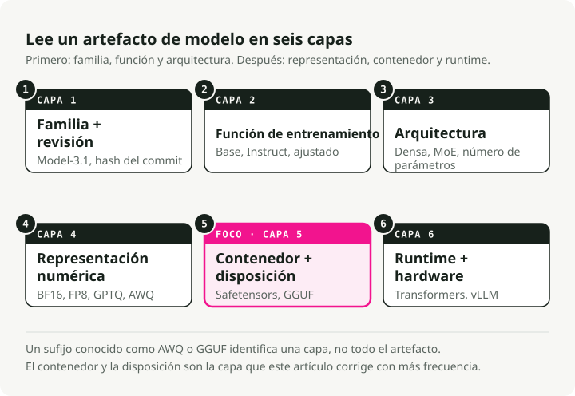
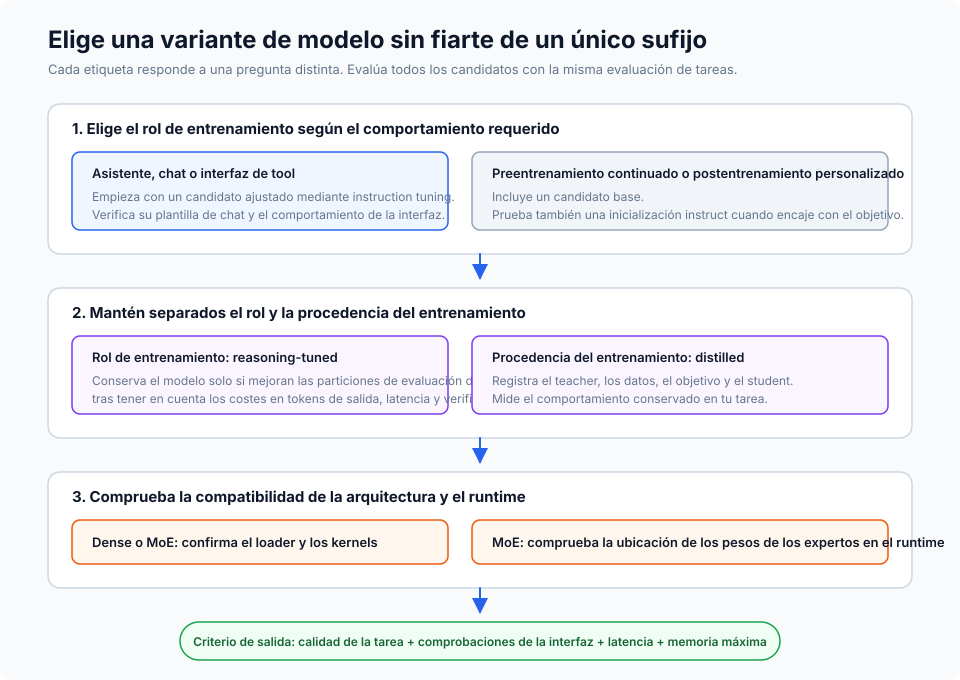
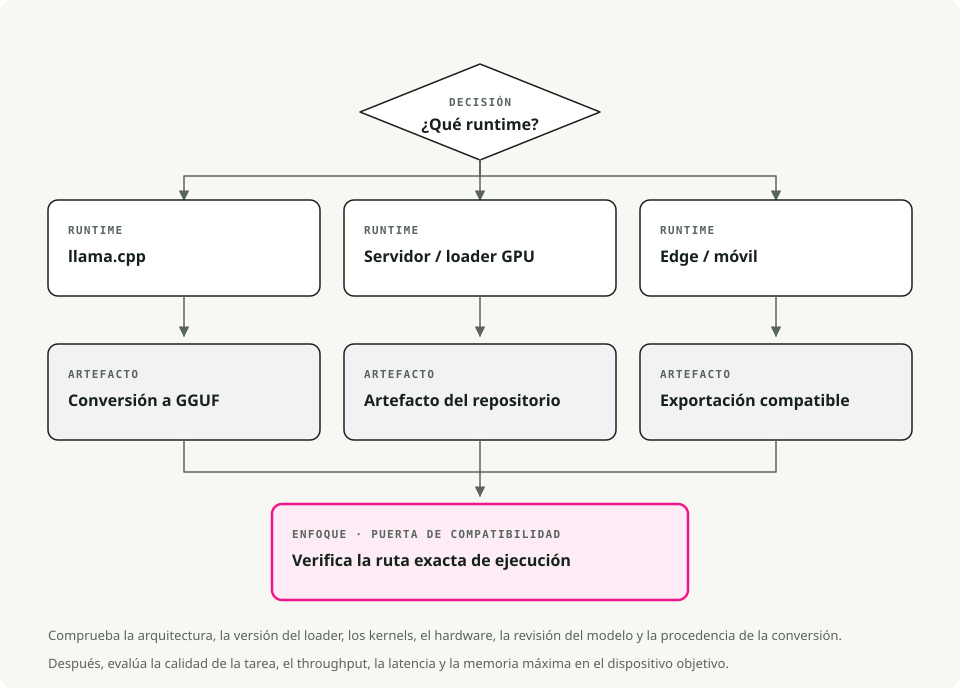
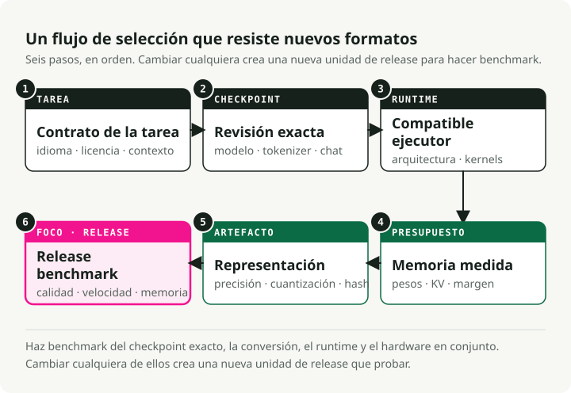

Traducción automática
Este artículo se tradujo automáticamente a partir de la versión original en inglés.
Variantes y formatos de archivo de LLM de código abierto: Instruct, GGUF, GPTQ, AWQ y MoE
¿Por qué los LLM de código abierto tienen tantos nombres confusos?
Probablemente hayas visto nombres como Llama-3.1-8B-Instruct.Q4_K_M.gguf o Mistral-7B-v0.3-A3B.awq y te hayas preguntado para qué sirven esos sufijos. Parecen ruido, pero en realidad te están diciendo dos cosas distintas a la vez.
Los LLM de código abierto varían en dos dimensiones independientes:
- Variante del modelo: el sufijo del nombre (
-Instruct,-Distill,-A3B) describe cómo se ha entrenado el modelo y para qué está optimizado. - Formato de archivo: la extensión (
.gguf,.gptq,.awq) describe cómo se almacenan los pesos y dónde funciona mejor (CPU, GPU, móvil).
La variante decide qué puede hacer el modelo. El formato decide dónde puede ejecutarse de forma eficiente.

Si confundes esas dos cosas, te pasarás una tarde persiguiendo errores de CUDA con un modelo que nunca iba a caber en tu gráfica desde el principio.
Variantes de modelo explicadas (la receta)
La variante te dice por qué tipo de entrenamiento han pasado los pesos.
Modelos Base
El modelo preentrenado en bruto. Aprendió patrones del lenguaje a partir de corpus de texto enormes, pero nunca se le enseñó a seguir instrucciones; lo único que hace es predecir el siguiente token.
Lo usarías cuando planeas hacer fine-tuning con tus propios datos, cuando estás investigando y quieres la base “pura”, o cuando específicamente quieres un modelo sin entrenamiento de alineamiento de por medio.
La contrapartida es que no seguirá instrucciones de forma fiable. Pregúntale “¿Cuál es la capital de Francia?” y puede que responda “¿y cuál es la capital de Alemania?” porque, desde su punto de vista, has empezado una lista de preguntas.
Modelos Instruct / Chat
Un modelo base que ha pasado por entrenamiento adicional (Supervised Fine-Tuning más RLHF) para que sepa seguir instrucciones humanas. Esto es lo que la mayoría de la gente quiere realmente cuando dice que “quiere un LLM”.
Es la opción correcta para chatbots, agentes y RAG. Lo mismo para function calling, uso de herramientas y ayuda diaria con programación. Aproximadamente el 95% de los casos de uso en producción caen aquí.
El coste es que es algo más grande y más lento que el modelo base debido al entrenamiento adicional, y el alineamiento puede hacerlo menos “creativo” porque se le ha empujado a ser predecible y útil.
Modelos de razonamiento / CoT
Una familia más reciente como DeepSeek-R1 o los derivados de o1, entrenados con aprendizaje por refuerzo sobre Chain-of-Thought. “Piensan” antes de responder: generan tokens internos de razonamiento para resolver lógica compleja, matemáticas o problemas de programación antes de producir la respuesta final.
Estos destacan en tareas de programación difíciles, depuración, problemas matemáticos y acertijos lógicos. También tienden a alucinar menos porque revisan su propio trabajo.
La pega es la latencia. Producen una larga secuencia de tokens de “pensamiento” que quizá ni siquiera veas, pero aun así tienes que esperar. También pueden ser innecesariamente verbosos para prompts triviales.
Modelos destilados
Un modelo “estudiante” más pequeño entrenado para imitar a un “profesor” más grande. El resultado es conocimiento comprimido: normalmente entre el 70 y el 80% de la calidad original con entre el 30 y el 50% del tamaño.
Encajan bien en dispositivos móviles o edge, en SaaS sensibles al coste donde cada milisegundo importa, y en servicios que necesitan atender muchas peticiones.
Pierdes algo de capacidad de razonamiento complejo, pero la eficiencia que recuperas es difícil de discutir.
MoE (Mixture-of-Experts): A3B, A22B, etc.
Una arquitectura en la que el modelo tiene muchas subredes “expertas”, pero solo activa un subconjunto para cada token. “A3B” significa que hay 3B de parámetros activos por token, aunque el modelo total puede ser de 30B o más.
Eso es útil cuando quieres la inteligencia de un modelo grande en una gráfica con 12-24 GB de VRAM sin pagar el coste completo de inferencia, o cuando ejecutas en local y quieres la mejor relación calidad/memoria.
Las desventajas: ocupa más en disco (sigues teniendo que almacenar todos los expertos), y no todos los frameworks de inferencia soportan todavía el enrutado de MoE. Comprueba la compatibilidad antes de comprometerte a una descarga de 50 GB.

Regla práctica:
- Por defecto, usa un modelo Instruct. Es lo que necesita la mayoría.
- ¿Te topas con límites de memoria o latencia? Prueba una variante Distilled o MoE.
- ¿Estás resolviendo lógica realmente difícil? Prueba un modelo de Reasoning.
Formatos de archivo explicados (el contenedor)
Una vez que sabes qué modelo quieres, tienes que elegir cómo va empaquetado. El formato decide sobre todo dónde puede ejecutarse y cuánta memoria necesita.
Cuantización 101: por qué reducimos los modelos
Los modelos estándar usan números de 16 bits (FP16) para cada peso. Precisos, pero pesados. La cuantización reduce los pesos a números de 8 bits, 4 bits o incluso 2 bits.
- FP16: 2 bytes por parámetro. Un modelo de 13B son ~26 GB.
- 4-bit: 0,5 bytes por parámetro. Un modelo de 13B son ~6,5 GB.
Cedes una pequeña cantidad de “inteligencia” y recuperas mucha velocidad y memoria.
GGUF (.gguf)
El sucesor de GGML y el estándar de facto para inferencia local hoy en día. Un único archivo contiene los pesos, los metadatos e incluso la plantilla del prompt.
Es la opción correcta en Apple Silicon (M1-M4), donde se ejecuta de forma nativa con aceleración Metal, y en máquinas sin GPU dedicada. Además, el ecosistema de herramientas es el mejor de cualquier formato: llama.cpp, Ollama y LM Studio consumen GGUF directamente.
Un solo archivo, funciona casi en todas partes y hay un nivel de cuantización para cada presupuesto de memoria.
Cómo descifrar nombres de GGUF (Q3_K_M, Q5_K_M, etc.)
A menudo verás una lista larga de archivos como Q3_K_M, Q4_K_S, Q5_K_M. No son aleatorios; pertenecen a la familia K-quant.
Leyendo Q3_K_M:
Q3: cuantización media de 3 bits para los pesos.K: usa el esquema K-quant (un método más reciente que usa precisión no uniforme).M: tamaño de bloque medio, dondeSes pequeño yLes grande.
Cuál elegir:
Q3_K_M: la opción ajustada de presupuesto. La calidad baja de forma apreciable, pero te permite ejecutar modelos más grandes en hardware más modesto.Q4_K_M: el estándar. Mejor equilibrio entre velocidad, tamaño y perplexity. Para la mayoría de tareas no notarás diferencia respecto a los pesos sin comprimir.Q5_K_M: la opción premium. Úsala si te sobra VRAM; la calidad está muy cerca de FP16 / Q8 y sigue siendo relativamente compacta.
Consejo práctico: A menudo es mejor ejecutar un modelo más grande con menor cuantización (Llama-70B en Q3) que un modelo más pequeño con alta cuantización (Llama-8B en Q8). El número de parámetros suele darte más inteligencia que la precisión.
GPTQ (.safetensors + config.json)
Cuantización post-entrenamiento orientada a GPUs Nvidia. Usa información de segundo orden para mantener baja la pérdida de precisión al comprimir los pesos.
Es el formato adecuado para servidores de producción que ejecutan CUDA en Linux, y para configuraciones de alto throughput a 4 bits. Con el loader ExLlamaV2, va muy rápido.
La pega es el requisito de hardware: necesita una GPU y no funciona de forma eficiente en CPUs ni en Mac.
AWQ (.safetensors)
Activation-Aware Weight Quantization. Analiza qué pesos importan más durante la inferencia y preserva su precisión, en lugar de comprimir todos los pesos de forma uniforme.
Tiende a acercarse más a la precisión de FP16 que GPTQ con el mismo presupuesto de 4 bits, y vLLM lo soporta de forma nativa. Si te importa sacar la máxima calidad posible de un modelo de 4 bits, AWQ suele ser el ganador.
PyTorch / Safetensors (FP16/BF16)
Pesos en precisión completa, sin cuantización. El formato original en el que se publican los modelos.
Es lo que quieres para inferencia en la nube con GPUs serias (A100, H100), para fine-tuning y entrenamiento continuo, y para casos en los que la precisión importa más que la memoria.
El coste es evidente: un modelo de 70B en FP16 necesita alrededor de 140 GB de VRAM.

Consejo: En caso de duda, empieza con GGUF Q4_K_M. Funciona en GPUs de 8 GB, CPUs modernas y casi todo lo que hay entre medias. Siempre puedes optimizar cuando sepas cuál es el cuello de botella.
Cómo ejecutar realmente todo esto (motores de serving)
Necesitas un motor de serving para cargar el modelo y responder peticiones.
- Ollama consume GGUF y funciona en Mac, Linux y Windows. Es la herramienta CLI más sencilla para desarrollo local;
ollama run llama3y listo. - LM Studio también usa GGUF y te da una GUI pulida en Mac y Windows. Va bien para explorar modelos de forma visual antes de decidirte por uno.
- vLLM es el estándar de producción. Carga safetensors AWQ, GPTQ y FP16, y está diseñado para servidores de alto rendimiento y despliegues con Docker. El soporte para GGUF sigue siendo irregular.
- llama.cpp es el motor que hay por debajo de Ollama. Úsalo directamente cuando necesites integración a bajo nivel, o cuando el destino sea pequeño (Raspberry Pi, Android, embebido).
Juntándolo todo: un marco de decisión
Un diagrama de flujo práctico para recorrerlo paso a paso. Empieza por tus restricciones (hardware y caso de uso), y luego elige la variante y el formato que encajen.

Recomendaciones rápidas por escenario
Crear un chatbot en un MacBook Pro (16 GB de RAM). Usa un modelo Instruct como Llama-3-8B o Mistral-7B en GGUF Q4_K_M. Funciona con fluidez en CPU y Metal, cabe en memoria y solo tienes que manejar un archivo.
Sistema RAG en un servidor con una RTX 4090 (24 GB de VRAM). Usa Instruct o MoE (Mixtral 8x7B, Qwen-14B) en EXL2 (vía ExLlamaV2) o AWQ de 4 bits. Así es como sacas valor real a 24 GB; EXL2 va muy rápido en tarjetas Nvidia.
Fine-tuning para uso específico de dominio en una GPU en la nube. Usa un modelo Base en safetensors FP16. Quieres precisión completa para entrenar, y partir de la base no alineada evita ir en contra del alineamiento durante el fine-tuning.
API de alto throughput con restricciones de coste. Usa un modelo Distilled (DeepSeek-Distill o similar) en AWQ de 4 bits sobre vLLM. El throughput por dólar es difícil de superar.
Errores frecuentes y conceptos equivocados
“Todos los modelos de 4 bits tienen la misma calidad”
No. Un modelo QAT de 4 bits (entrenado en 4 bits) a menudo supera a un modelo cuantizado post-entrenamiento de 8 bits. El método importa tanto como el número de bits, y AWQ suele preservar más precisión que un GPTQ ingenuo.
“Los modelos MoE funcionan con cualquier motor de inferencia”
Todavía no. llama.cpp gestiona bien el enrutado de MoE, pero el soporte en otros motores varía. Compruébalo siempre antes de descargar un modelo MoE de 50 GB.
“Los modelos destilados son solo versiones más pequeñas de lo mismo”
Esa es la parte que la mayoría pasa por alto. Un 7B destilado puede superar a un 13B vanilla porque ha aprendido de un profesor mucho más grande (a menudo de 70B o más). Es conocimiento comprimido, no solo parámetros comprimidos.
“Debería cuantizar aún más mi modelo QAT para ahorrar espacio”
No merece la pena. Los modelos QAT ya se han entrenado en baja precisión. Cuantizarlos otra vez encima de eso suele degradar mucho la calidad. Úsalos tal como se publican.
“Más grande siempre es mejor”
Muchas veces sí, pero no siempre. Un modelo Instruct de 8B bien afinado puede rendir mejor que un 70B base mal alineado en una tarea concreta. Ajusta la variante al caso de uso antes de obsesionarte con el número de parámetros.
TL;DR - dime simplemente qué tengo que descargar
Si solo quieres algo que funcione:
- Descarga un archivo
<model-name>-Instruct.Q4_K_M.ggufde Hugging Face.- Ejecútalo con Ollama o LM Studio.
- Si va demasiado lento, prueba un modelo más pequeño o una variante Distilled.
- Si te quedas sin memoria, baja a una cuantización Q3_K_M.
- Si la calidad no es suficiente, sube a Q5_K_M o elige un modelo más grande.
Empieza por lo simple y optimiza cuando realmente lo necesites. La configuración por defecto funciona en ~90% de los casos.